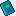

Otomatik Çap Tasarımı¶
Otomatik Çap Tasarımı
|
---|---
Tesisatın konumlandırmasını tamamladıktan sonra, yani hatlarınızı çiizp tüketim unsurlarını yerleştirdikten sonra eğer isterseniz Zetacad sizin için en uygun hat çaplarını hesaplayarak tasarlayabilir. Burada çok özel yapay zeka algoritmaları kullanılarak, bir hattın çapı tüm devredeki kayıp miktarı, hattaki gaz hızı ve maliyet ekonomisi dikkate alınarak çaplandırma yapılır.
Otomatik çaplandırmayı yaptırmak içim Hesap menüsünden Otomatik Tasarla seçeneğini tıklayınız veya araç çubuğundan Otomatik Tasarla 
{kind=link}
Çaplar seçilirken özel yapay zeka algoritması bir çok seçeneği dener ve
a. hız limitlerini aşmayan (hatta zorlamayan)
b. devredeki toplam kayıp limitini dikkate alan
c. özellikle daire içi ve kat branşmanlarında estetiği gözeten
d. mümkün olan en düşük maliyetli
e. kullanıcının özel isteklerine cevap veren
optimum tasarımı oluşturur.
**Tasarım Seçenekleri
**Hesap menüsünden Otomatik Tasarla seçeneğini tıkladığınızda karşınıza aşağıdaki pencere açılacaktır.
{kind=link}
Bu penceredeki seçenekleri kullanarak otomatik çap tayini algoritmasının sizin tercihlerinize göre davranmasını sağlayabilirsiniz. Çap tasarımında özelleştirebileceğiniz hususlar aşağıda açıklanmıştır. Bu penceredeki değerleri belirledikten sonra TAMAM butonuna basarsanız tesisat otomatik olarak çaplandırılacaktır. Ve bu pencerde sisteme verdiğiniz tercihlerin son değerleri projede saklı tutulacaktır. Araç çubuğundaki ilgili tasarla butonuna bastığınızda artık bu pencere açılmayacak ve son mevcut tercihlerle tasarlama yapılacaktır.
Kolon Kayıp Limiti
**Normalde bir tesisatta kayıp değeri 1.0 değerinin üzerinde olmamalıdır ve Zetacad kolon çaplarını tasarlarken bu limiti dikkate alır. Kolon hatlarından sonra iç tesisatlar tasarlanırken kolon devrelerinin ucundaki kayıplar 1.0 dan az ise bu avantaj daire içi tasarımda kullanılır. Dolayısıyla kolon tasarımı yapılırken bazen proje müellifi kolonda 1.0 değerinden dahah düşük kendi kayıp limitini esas almak isteyebilir. (Bu durum, daha sonra yapılacak iç tesisat projeleri için önceden kolonda daha rahat değerler bırakmak için de tercih edilir). Bunun için bu pencerede yer alan Kolon Kayıp Limiti k utusundaki değeri kendi tercihinize göre değiştirebilirsiniz. Bu değeri değiştirdikten sonra tasarlama yaparsanız artık kolondaki kayıp bu değerin üstünde olmayacaktır. Böylelikle daire içi çaplandırmada artık daha yüksek bir kayıp limitine imkan olduğu için, daha küçük çaplar kullanılabilir.
_En düşük kolon çapı
Bazen hız ve kayıp değerleriyle uyumlu olsa de kolon tesisatında ve branşmanlarda DN20 gibi düşük çaplı boru kullanmak istemeyiz. Bu elimizdeki malzemenin durumu ile ilgili olduğu gibi değişik nedenlerle de alakalı olabilir. Varsayılan değeri DN20 olan _En düşük kolon çapı seçeneğini isterseniz DN25 yapabilirsiniz. Böylelikle otomatik tasarım kolon çaplarını oluştururken DN25 altındaki değerleri kullanmayacaktır.
_En yüksek kolon çapı
Bazen hız ve kayıp değerleriBazen hız ve kayıp değerleriyle uyumlu olsa de kolon tesisatında ve branşmanlarda yüksek çaplı boru kullanmak istemeyiz. Bu elimizdeki malzemenin durumu ile ilgili olduğu gibi değişik nedenlerle de alakalı olabilir. Varsayılan değeri DN80 olan _En yüksek kolon çapı seçeneğini isterseniz daha küçük değerlerden seçebilirsiniz. Böylelikle otomatik tasarım kolon çaplarını oluştururken seçtiğiniz değerin üstündeki çapları kullanmayacaktır.